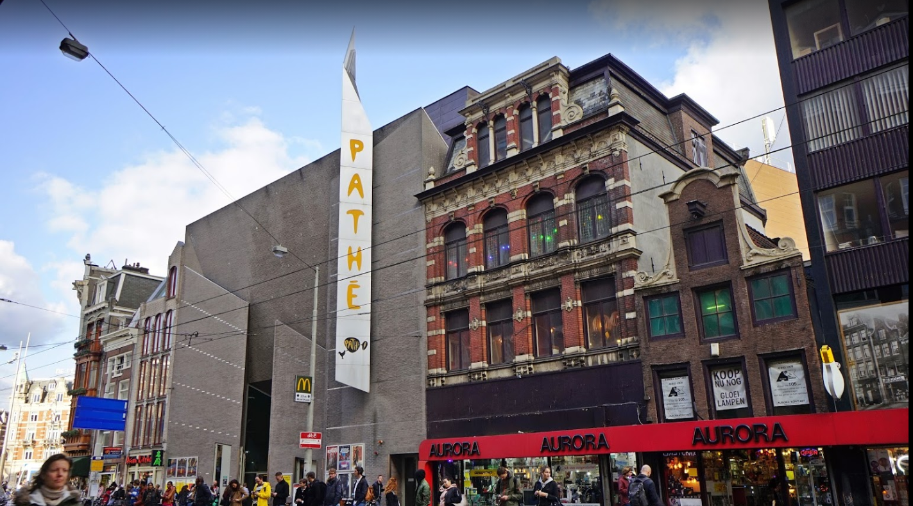
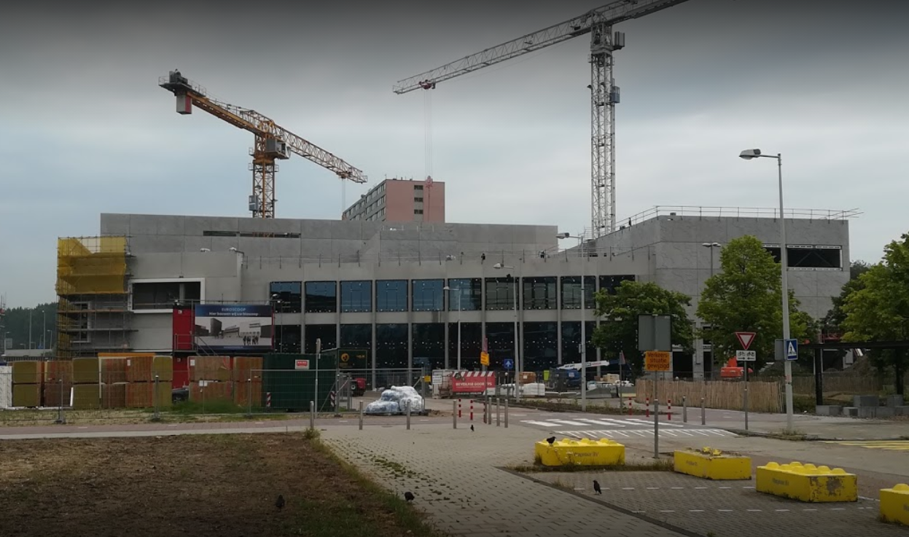
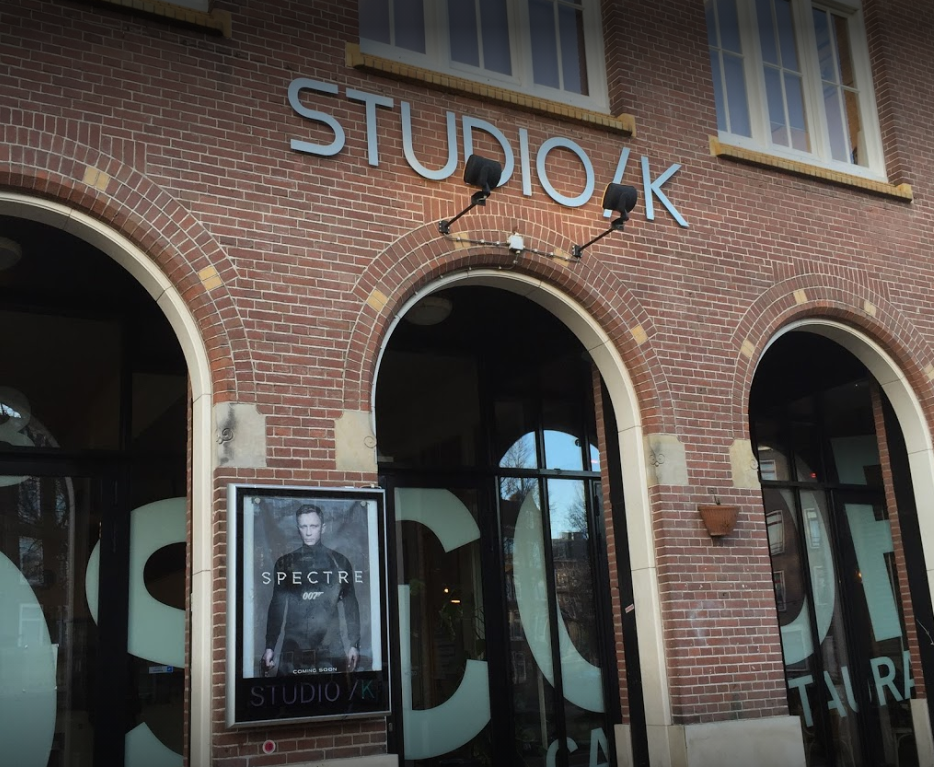

Cinemas in Amsterdam
Watch a movie in our best cinemas
Pathé
Pathé runs four big cinema complexes in Amsterdam–the most impressive being the Pathé Arena in Bijlmer–which also boasts an imax theatre and shows movies on a huge screen. Pathé Tuschinski is situated in a magnificent Art Deco building in the city centre. A lot of Dutch movies have also been filmed in this building. Pathé cinemas mostly screen Hollywood blockbusters, plus some art-house movies (pac), and Turkish and Bollywood movies. On Tuesday evenings, Pathé offers special sneak previews. If you show your student card, you can get a discounted ticket.
Euroscoop
Location: Buikslotermeerplein 2003
Euroscoop is the newest cinema in Amsterdam-Noord. It opened it’s doors in November 2019 and has 2500 seats. It offers children and students a cheap rate and prides itself on being the most affordable cinema in the region.
Studio/K
Location: Timorplein 62
This place is more than just a cinema. It is also a restaurant, club, gallery and concert venue run by students. The focus is on showing movies from around the world, to shine a spotlight on movies that offer an alternative perspective to mainstream Hollywood.